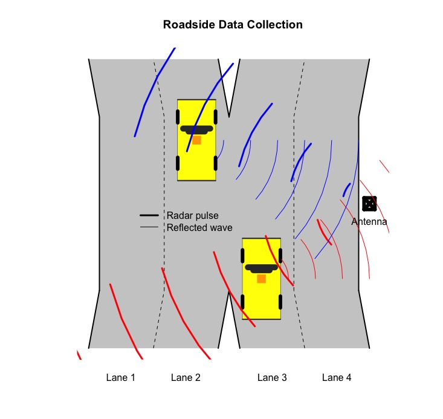

As we carefully review the outcomes of the simulations derived from various deterministic and stochastic models, we must conclude that self-optimizing drivers are working against their own self interest in avoiding congestion and minimizing delay. Contrast the results from the Zipper Merge and Traffic Breakdown Part 7 simulations. It is instructive.
The Zipper Merge simulation assumes that drivers act in concert to align themselves before merging. The analysis suggests that drivers can successful merge at any speed, suggesting that high speed merges can take place. There is no empirical evidence to support this contention other than observing drivers on a race track.
Traffic Breakdown Part 7 simulations assume that drivers act individually. They are self optimizers, who have little incentive to give their counterparts room to maneuver. As a result, they promote delay. This kind of self-serving behavior is not new to traffic operations. It is known as Braess’s Paradox (Braess, Nagurney, and Walkobinger 2005). It has been demonstrated both with mathematical models and with empirical evidence that closing certain roads in a roadway network can improve service. Roughgarden and Tardos (2002) reported that total delay using convex programming for a simple idealized “optimum” network would decrease delay by one-third over a “non-optimum” network.
Critics may claim that counter intuitive methods as suggested by the Braess’s Paradox approach has no application to traffic breakdown at a bottleneck. It is a far-fetched notion to assume the geometric layout of an interstate freeway interchange, say, can be improved in any meaningful or practical way. If so, it will be extraordinarily expensive.
Secondly, training drivers to change their habits is social engineering requiring unobtainable behavioral changes. For example, drivers are taught that the right and left freeway lanes are reserved for slower and higher speed travel, respectively. Take any freeway of your choosing and observe that this teaching is not enforced by law enforcement and ignored by the majority of the driving public. Tailgating is common practice.
Finally, critics can claim that the deterministic Zipper Merge model disregards traffic volatility, therefore it ignores a most fundamental premise of the work presented here in the cartools package. These are formidable criticisms.
Intelligent Transportion Systems
Consider a proof-of-concept project. Control traffic noise while leaving individual driver behavior more-or-less alone.
How can this be done? Our answer is to apply Intelligent Transportion Systems (ITS) in a smart city environment. The project consists of three major components:
Collect Floating Car Data. Data collected on-board a vehicle with GPS systems is called floating car data or floating cellular data https://en.wikipedia.org/wiki/Floating_car_data. These data are real time, tracking data. Measures include vehicle location \(x_{vehicle}(t)\) and vehicle speed \(u_{vehicle}(t)\) data, which will be transmitted using wireless technology and stored on a central controller computer.
Develop a real-time forecast algorithm. The algorithm will be created along the lines of the Zipper Merge and brktrials2 models. In lieu of simulating zipper and traffic breakdown merges, a brkzipper algorithm would be used to provide real-time information directed at the individual driver. “Optimum” \({x}_{driver}(t)\) locations and \({u}_{driver}(t)\) speeds, derived from vehicle location \(x_{vehicle}(t)\) and vehicle speed \(u_{vehicle}(t)\) data, that minimize delay for all drivers. For example, instruct a driver, who will triggered breakdown in the Traffic Breakdown Part 7 simulation, say, to maintain his or her speed and not decelerate. Other drivers would be given similar instructions. By providing individualized instruction, an optimum solution is obtained for all drivers using a “socialized roadway network.”
Use GPS to transmit individualized “optimized” driver instruction. To be effective, drivers will relinquish control of their vehicles. GPS coupled with a on-board vehicle control system will be used. The on-board system is contemplated to be similar to an autonomous cruise control (ACC) device, a device found on contemporary vehicles sold today. This is not social engineering. It is common sense. The driving public applauds, purchases and uses this kind of innovative technology.
Smart Cities and the Internet of Things
“A smart city is an urban area that uses different types of electronic data collection sensors to supply information which is used to manage assets and resources efficiently. https://en.wikipedia.org/wiki/Smart_city” Our proof-of-concept meets this definition.
Data Collection: The equipment to collect floating car data is currently not available. The 5G Automotive Association (2018) and partnerships other automotive and high tech firms will make this a reality. There is no question that high-quality real time, tracking data are needed. Reasonably priced radar equipment placed roadside to obtain \(u(t)\) data by traffic lane as shown below. This diagram shows the same yellow vehicle traveling northbound. Since the driver is traveling westward, the driver moves from lane 3 to 2. The times and speeds of the vehicle are measured and recorded as \(u(t_1)\) and \(u(t_2)\) where \(t_2\) > \(t_1\). This vehicle is not tracked, therefore the subscribe \(vehicle\) is absent using this data collection scheme.

Vehicle tracking data can be obtained using the vehicle re-identification method. Radio-frequency identification (RFID) serial numbers are collected with radar. RFID sensors are placed on the antenna. In the schematic above, four sensors are needed, one for each traffic lane. If a RFID transponder is placed in our yellow vehicle, then it can be tracked. RFID transponders are used for toll collection and estimating traffic flow. Obviously, not all vehicles are tracked but the method will produce reasonable estimates lane changing information.
Benefits and Liabilities: This proof-of-concept project is a multidisciplinary effort involving engineers, computer scientists, statisticians and mathematicians using cutting-edge and innovative. However, a smart city mobility project involves more than collecting, analyzing and distributing data.
Albino, Berardi, and Dangelico (2015) state that there is a clear need to engage policy makers from local communities. Take the Uber Driverless-Car-Project in the City of Pittsburgh for example https://www.nytimes.com/2017/05/21/technology/pittsburgh-ubers-driverless-car-experiment.html. An Advanced Technology Center was opened for driverless car research, a benefit. However, Uber failed to honor its promises to form a meaningful partnership with the city. Uber promised to hire Hazelwood residents, provide seed money and help apply for a federal grant, share traffic data collected by lidar devices mounted on their cars, among other things. No Hazelwood residents were hired, the grant was denied, and the data delivered to the city was insufficient.
Student Learning: We feel that our proof-of-concept project provides, at minimum, a good learning experience for students in engineering and computer science http://eng-cs.syr.edu/transformation/. It can be extended to be an excellent multidisciplinary effort where students from various disciplines work together. Two article that appear in the Syracuse University Spring Magazine 2018 issue describe exciting learning opportunities open to students provided by the Maxwell X Lab, iSchool and Whitman School https://www.syracuse.edu/wp-content/uploads/sumagazine-2018-spring.pdf.
Data Sharing: In this age of Big Data, it is appropriate for public, private and educational institutions to share their knowledge and data resources. If nothing else is gained from the cartools website, a reader must realize good field data are essential. It may seem surprising that the data used in our studies is special. Why? It was continuously measured 24/7 over an eight month period. As importantly, it contains speed data. Typically, DOTs around nation do not collect speed data and only flow data (New York State 2004). There are no speed data in CNY.
Cooperative Learning: We have established a dialog with University of Tennessee in Chattanooga, TN. “The Underground Infrastructure Sensing project, headed by UTC’s Dr. Dalei Wu in the College of Engineering and Computer Science, was chosen by Smart Cities Connect Media and Research for the award. The project is a collaboration with Dr. Dryer Huston at the University of Vermont.” https://blog.utc.edu/news/2018/03/utc-named-one-top-50-green-projects-country/. UTC has recently embarked on a data collection effort on a major thoroughfare in the city as described above. See Collect real-time data.
One of these days, I-81 will be replaced. Traffic data could be used in a before-after study to determine the benefits obtained from replacing it. It could also prove to be of great value for planning to use smart mobility systems in Syracuse, understandably whose national reputation is marred by being located in the U.S. Rust Belt.
The Academic Mission: Since no one university has all the resources at this point in time (maybe never) to tackle a Big Data project, we are reaching out to form partnerships with SU, UTC and UVM. As a starter, we would like discuss the possibility of talking with professors who will be working on senior projects for the spring semester of 2019. We know a few faculty advisers who work with local engineering firms and various government agencies. This is a tremendous resource. They will find it rewarding and may also discover that sharing information with GitHub and/or other open-source servers gives them and their students a valuable tool.
Denise Owen Harrigan states in her Syracuse University Spring Magazine article that “At Syracuse, Big Data is a big player. It’s steering academic programs in new directions, igniting interest throughout campus, and inspiring new research questions and innovative research methodologies.” We believe that our proof-of-concept project meets this criteria.
References
5G Automotive Association. 2018. “Bridging the Automotive and ICT Industries.” 2018. http://5gaa.org/about-5gaa/about-us/.
Albino, Vito, Umberto Berardi, and Rosa Maria Dangelico. 2015. “Smart Cities: Definitions, Performance and Initiatives.” Journal of Urban Technology 22 (1).
Braess, D., A. Nagurney, and T. Walkobinger. 2005. “On the Paradox of Traffic Planning.” Transportation Science 39 (4):446–50.
New York State, Department of Transportation. 2004. “2004 TRAFFIC DATA REPORT FOR NEW YORK STATE.” 2004. https://www.dot.ny.gov/divisions/engineering/technical-services/hds-respository/Traffic%20Data%20Report%202004.pdf.
Roughgarden, Tim, and Éva Tardos. 2002. “How Bad Is Selfish Routing?” J. ACM 49 (2). New York, NY, USA: ACM:236–59. https://doi.org/10.1145/506147.506153.